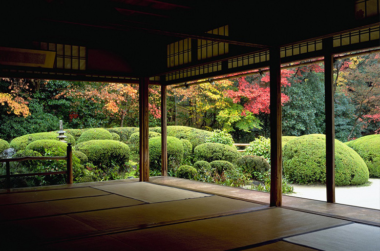

Kyoto, the ancient capital of Japan, is a city that never ceases to amaze with its rich cultural heritage and stunning natural beauty. While many travelers flock to the well-known landmarks like Kinkaku-ji and Fushimi Inari-taisha, there are countless lesser-known treasures waiting to be discovered. In this guide, we'll take you on a journey to explore the hidden gems of Kyoto, where you can experience the city's true essence away from the crowds.
One such gem is the serene Otagi Nenbutsu-ji Temple, tucked away in the hills of Arashiyama. This temple is home to over 1,200 unique stone statues of rakan, the disciples of Buddha, each with its own distinct expression. Walking through this temple is like stepping into a whimsical world, offering a peaceful retreat from the bustling city.
Another must-visit is the charming district of Higashiyama, where narrow, cobblestone streets wind their way past traditional wooden machiya houses. Here, you can find quaint tea houses, artisanal shops, and the picturesque Yasaka Pagoda. A stroll through this district feels like a journey back in time, allowing you to immerse yourself in the historic ambiance of Kyoto.
For nature lovers, the hidden gem of Kamo River's upper reaches offers a tranquil escape. Unlike the crowded sections downstream, this area is a haven for birdwatchers and those seeking a quiet place to relax. Pack a picnic and enjoy the soothing sounds of the river while taking in the lush greenery that surrounds you.
For those who have seen the Earth from space, and for the hundreds and perhaps thousands more who will, the experience most certainly changes your perspective. The things that we share in our world are far more valuable than those which divide us.
Nishiki Market: Kyoto's Kitchen
Lastly, don't miss the Nishiki Market, often referred to as Kyoto's kitchen. This bustling market is filled with stalls selling fresh produce, local delicacies, and unique souvenirs. It's the perfect place to sample traditional Kyoto cuisine and experience the city's vibrant culinary scene.
Kyoto's cultural richness is also showcased through its numerous festivals and events throughout the year. The Gion Matsuri in July is one of Japan's most famous festivals, featuring grand processions of beautifully decorated floats. In autumn, the Jidai Matsuri celebrates Kyoto's history with a parade of participants dressed in historical costumes from different eras. These festivals offer a vibrant glimpse into the traditions and communal spirit of Kyoto, making them a must-see for any visitor.
"Kyoto is a city that whispers its secrets to those willing to listen. Every corner, every street holds a story waiting to be discovered. To wander through Kyoto is to walk through history, where the past and present coexist in perfect harmony."
After a culinary adventure at Nishiki Market, head over to the Gion District, Kyoto's most famous geisha district. Wander through the narrow streets lined with traditional wooden machiya houses and tea houses where you might catch a glimpse of a geisha or maiko in their elegant attire. Gion offers a unique opportunity to experience the traditional arts and culture of Japan.
Discovering Hidden Gardens
Kyoto is also home to many beautiful, hidden gardens that provide a serene escape from the city's hustle and bustle. The Shisen-do Temple garden, for example, is a tranquil retreat known for its lush greenery, peaceful atmosphere, and stunning autumn foliage. Another hidden gem is the Murin-an garden, designed by a famous Meiji-era garden designer, which offers a perfect blend of natural beauty and artistic design.
 A serene view of the lush Shisen-do Temple garden, a peaceful retreat in the heart of Kyoto.No visit to Kyoto is complete without experiencing a traditional Japanese tea ceremony. The city boasts numerous tea houses where you can partake in this age-old ritual. Places like Camellia Tea Ceremony offer visitors a chance to learn about the history and significance of the tea ceremony while enjoying matcha in a serene setting. The meticulous preparation and presentation of the tea reflect the profound cultural heritage of Kyoto and provide a moment of calm reflection.
Kyoto's hidden gems offer a glimpse into the city's soul, revealing a side of Kyoto that is both enchanting and unforgettable. Whether you're a first-time visitor or a seasoned traveler, these lesser-known treasures will leave you with lasting memories of your journey through Kyoto.